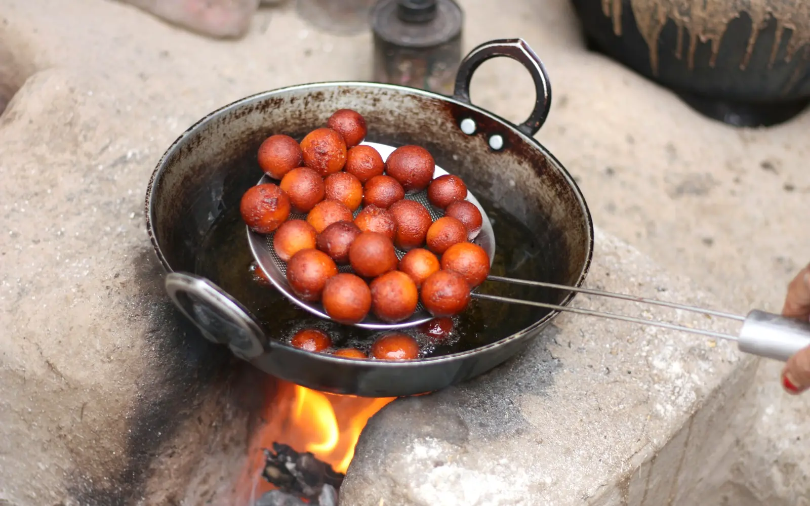
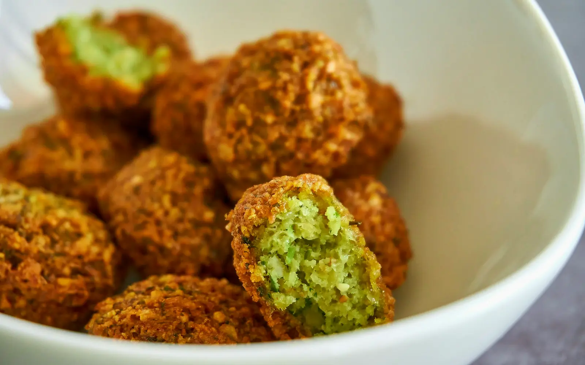
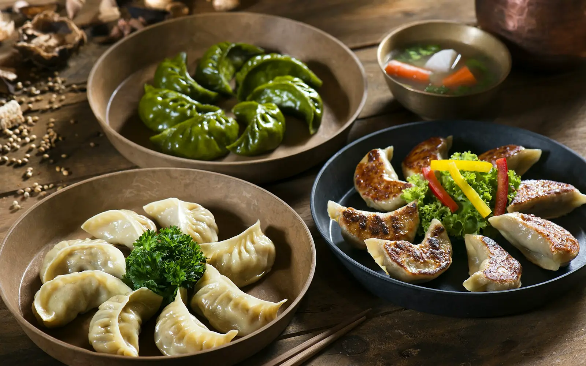

12 recipes
Asia
Saffron, smoke and street stalls
 IndiaAmritsari Chole50 min · MediumWhat you needKabuli chana, Pyaaz, Tamatar, Adrak, LehsunOpen recipe →
IndiaAmritsari Chole50 min · MediumWhat you needKabuli chana, Pyaaz, Tamatar, Adrak, LehsunOpen recipe → IndiaPaneer Butter Masala35 min · MediumWhat you needPaneer, Tamatar, Pyaaz, Kaju, AdrakOpen recipe →
IndiaPaneer Butter Masala35 min · MediumWhat you needPaneer, Tamatar, Pyaaz, Kaju, AdrakOpen recipe → IndiaMasala Dosa40 min · HardWhat you needChawal, Urad dal, Aloo, Pyaaz, Hari mirchOpen recipe →
IndiaMasala Dosa40 min · HardWhat you needChawal, Urad dal, Aloo, Pyaaz, Hari mirchOpen recipe → IndiaDal Tadka30 min · EasyWhat you needArhar dal, Pyaaz, Tamatar, Lehsun, Hari mirchOpen recipe →
IndiaDal Tadka30 min · EasyWhat you needArhar dal, Pyaaz, Tamatar, Lehsun, Hari mirchOpen recipe → IndiaMumbai Pav Bhaji40 min · EasyWhat you needAloo, Phool gobhi, Hari matar, Shimla mirch, PyaazOpen recipe →
IndiaMumbai Pav Bhaji40 min · EasyWhat you needAloo, Phool gobhi, Hari matar, Shimla mirch, PyaazOpen recipe →
IndiaGulab Jamun45 min · HardWhat you needKhoya, Maida, Doodh, GheeOpen recipe → ThailandVegetable Pad Thai25 min · Medium · Vegetarian versionWhat you needFlat rice noodles, Tofu, Ankurit moong, Gajar, Hara pyaazOpen recipe →
ThailandVegetable Pad Thai25 min · Medium · Vegetarian versionWhat you needFlat rice noodles, Tofu, Ankurit moong, Gajar, Hara pyaazOpen recipe → South KoreaJapchae30 min · Medium · Vegetarian versionWhat you needGlass noodles, Palak, Gajar, Shimla mirch, MushroomOpen recipe →
South KoreaJapchae30 min · Medium · Vegetarian versionWhat you needGlass noodles, Palak, Gajar, Shimla mirch, MushroomOpen recipe →
LebanonFalafel30 min · MediumWhat you needKabuli chana, Pyaaz, Lehsun, Parsley, Hara dhaniyaOpen recipe →
NepalVeg Momos50 min · Hard · Vegetarian versionWhat you needMaida, Patta gobhi, Gajar, Pyaaz, LehsunOpen recipe → JapanAvocado Cucumber Maki45 min · HardWhat you needChawal, Nori sheets, Avocado, Kheera, GajarOpen recipe →
JapanAvocado Cucumber Maki45 min · HardWhat you needChawal, Nori sheets, Avocado, Kheera, GajarOpen recipe → ChinaVegetable Spring Rolls45 min · MediumWhat you needMaida, Patta gobhi, Gajar, Shimla mirch, Hara pyaazOpen recipe →
ChinaVegetable Spring Rolls45 min · MediumWhat you needMaida, Patta gobhi, Gajar, Shimla mirch, Hara pyaazOpen recipe →